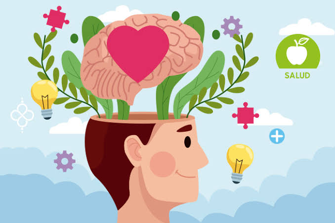
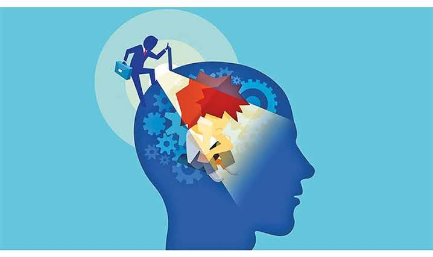

Habilidades blandas
¿Que son las habilidades blandas?
Las habilidades blandas son una serie de competencias sociales y emocionales que juegan un papel fundamental en la forma en que interactuamos con los demás y cómo nos desenvolvemos en diferentes contextos de la vida. Estas habilidades no están directamente relacionadas con conocimientos técnicos específicos, sino que se centran en aspectos personales los cuales contamos todo y cada uno de nosotros
"Las habilidades duras te conseguiran entrevistas, pero seran las habilidades blandas las que te conseguiran un trabajo" -Stephanie Cirilo
"Las personas son contratadas por sus habilidades tecnicas y despedidas por su falta de habilidades blandas" -Daniel Coleman
Inteligencia Emocional
La inteligencia emocional es la capacidad de reconocer y controlar nuestras propias emociones, así como las emociones de los demás. Teniendo la habilidad de percibir y expresar emociones de manera adecuada..
Ejemplo
En el trabajo se puede relacionar al momento de tener una comunicación o contacto con compañeros de trabajo, para poder tener un mejor desempeño, como apoyar en algún proyecto laborioso y otorgar al compañero herramientas o motivación para desarrollar mejor el trabajo.

Empatía
La empatía es la capacidad de comprender y compartir los sentimientos, pensamientos y experiencias de otra persona, poniéndose en su lugar y viendo el mundo desde su perspectiva.
Ejemplo
Cuando un compañero tuvo problemas con alguna materia, por ejemplo, base de datos, se brindó el apoyo de todos los amigos para poder apoyar y hacer que pudiera aprobar la materia, aunque le costaba un poco.
Autoconocimiento
El autoconocimiento es la comprensión consciente que tenemos sobre nosotros mismos. La autoevaluación nos ayuda a entender quiénes smos realmente.
Ejemplo
Cuando se lleva a cabo aprender fuera de clases, por ejemplo, estudiamos y tomamos cursos por Udemy para adquirir mayor conocimiento fuera de la universidad.

Liderazgo
El liderazgo es la capacidad de una persona para influir, motivar y guiar a otros hacia el logro de metas y objetivos comunes. Implica la habilidad de inspirar y dirigir a un equipo o a una organización.
Ejemplo
El liderazgo lo compartimos entre varios compañeros, ya que si se tiene que realizar algún proyecto o actividad en equipo, todos nos organizamos y todos lideramos de la misma manera.
Pensamiento crítico
El pensamiento crítico es una habilidad cognitiva que implica analizar, evaluar y cuestionar de manera objetiva la información antes de aceptarla o tomar decisiones al respecto.
Ejemplo
Detenidamente mis compañeros analizamos las situaciones antes de sacar conclusiones, sobre cualquier trabajo, para poder realizar un trabajo satisfactorio tanto para el docente como para nosotros.

Empatía digital
La empatía digital se refiere a la capacidad de comprender, compartir y responder a las emociones y experiencias de otros en entornos digitales, como las redes sociales, los mensajes de texto, los correos electrónicos, entre otros medios de comunicación en línea.
Ejemplo
Al igual, nos comunicamos por diferentes plataformas web para poder llevar a cabo algún apoyo tanto moral como en trabajo para que el compañero pueda desarrollar y realizar el trabajo solicitado y comprender el tema para que no se quede fuera de lo que nosotros sabemos.
Comunicación
La comunicación como habilidad blanda se refiere a la capacidad de transmitir información, ideas, pensamientos y emociones de manera efectiva y clara tanto verbalmente como no verbalmente.
Ejemplo
La comunicación siempre ha sido clave en cualquier relación social, y sobretodo para poder realizar cualquier tipo de actividad, tanto en la universidad como fuera, eso ha sido siempre parte de mi círculo social y es muy bueno.
Espíritu colaborador
El espíritu colaborador se refiere a una disposición o actitud positiva hacia el trabajo en equipo y la colaboración con otros para lograr objetivos comunes.
Ejemplo
Principalmente hemos brindado apoyo a compañeros de grupo si necesita ayuda con algún trabajo, para que se pueda crear un ambiente solidario y constructivo.
Gestión de conflictos
La gestión de conflictos es el proceso de manejar y resolver las discrepancias, desacuerdos o peleas que surgen entre miembros, equipos o grupos dentro de una organización.
Ejemplo
Totalmente, en la experiencia universitaria, han existido conflictos por diferencias, pero siempre se brinda soluciones para tener la mejor alternativa como equipo y así lograr el objetivo.